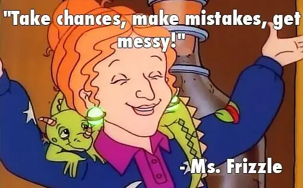

print('Hello world!')
## Hello world!7 Introduction to Programming
7.1 What is Programming?
Programming today is a race between software engineers striving to build bigger and better idiot-proof programs, and the universe trying to produce bigger and better idiots. So far, the universe is winning. - Rick Cook
Programming is the art of solving a problem by developing a sequence of steps that make up a solution, and then very carefully communicating those steps to the computer. To program, you need to know how to
- break a problem down into smaller, easily solvable problems
- solve the small problems
- communicate the solution to a computer using a programming language
In this book, we’ll be using both R and Python, and we’ll be using these languages to solve problems that are related to working with data. At first, we’ll start with smaller, simpler problems that don’t involve data, but by the end, you will hopefully be able to solve some statistical problems using one or both languages.
It will be hard at first - you have to learn the vocabulary in both languages in order to be able to put commands into logical “sentences”. The problem solving skills are the same for all programming languages, though, and while those are harder to learn, they’ll last you a lifetime.
Just as you wouldn’t expect to learn French or Mandarin fluently after taking a single class, you cannot expect to be fluent in R or python once you’ve worked through this book. Fluency takes years of work and practice, and lots of mistakes along the way. You cannot learn a language (programming or otherwise) if you’re worried about making mistakes. Take a minute and put those concerns away somewhere, take a deep breath, and remember the Magic School Bus Motto:

7.2 Programming Vocabulary: Hello World
I particularly like the way that Python for Everybody [1] explains vocabulary:
Unlike human languages, the Python vocabulary is actually pretty small. We call this “vocabulary” the “reserved words”. These are words that have very special meaning to Python. When Python sees these words in a Python program, they have one and only one meaning to Python. Later as you write programs you will make up your own words that have meaning to you called variables. You will have great latitude in choosing your names for your variables, but you cannot use any of Python’s reserved words as a name for a variable.
When we train a dog, we use special words like “sit”, “stay”, and “fetch”. When you talk to a dog and don’t use any of the reserved words, they just look at you with a quizzical look on their face until you say a reserved word. For example, if you say, “I wish more people would walk to improve their overall health”, what most dogs likely hear is, “blah blah blah walk blah blah blah blah.” That is because “walk” is a reserved word in dog language. Many might suggest that the language between humans and cats has no reserved words.
The reserved words in the language where humans talk to Python include the following:
and del global not with
as elif if or yield
assert else import pass
break except in raise
class finally is return
continue for lambda try
def from nonlocal whileThat is it, and unlike a dog, Python is already completely trained. When you say ‘try’, Python will try every time you say it without fail.
We will learn these reserved words and how they are used in good time, but for now we will focus on the Python equivalent of “speak” (in human-to-dog language). The nice thing about telling Python to speak is that we can even tell it what to say by giving it a message in quotes:
And we have even written our first syntactically correct Python sentence. Our sentence starts with the function print followed by a string of text of our choosing enclosed in single quotes. The strings in the print statements are enclosed in quotes. Single quotes and double quotes do the same thing; most people use single quotes except in cases like this where a single quote (which is also an apostrophe) appears in the string.
R has a slightly smaller set of reserved words:
if else repeat while
for in next break
TRUE FALSE NULL Inf
NA_integer_ NA_real_ NA_complex_ NA_character_
NaN NA function ...In R, the “Hello World” program looks exactly the same as it does in python.
print('Hello world!')
## [1] "Hello world!"In many situations, R and python will be similar because both languages are based on C. R has a more complicated history [2], because it is also similar to Lisp, but both languages are still very similar to C and run C or C++ code in the background.
7.3 Getting help
In both R and python, you can access help with a ? - the order is just slightly different.
Suppose we want to get help on a for loop in either language.
In R, we can run this line of code to get help on for loops.
?`for`Because for is a reserved word in R, we have to use backticks (the key above the TAB key) to surround the word for so that R knows we’re talking about the function itself. Most other function help can be accessed using ?function_name. The backtick trick also works for functions that don’t start with letters, like +.
In python, we use for? to access the same information.
for? # help printed in the terminal
?for # help printed in the help pane(You will have to run this in interactive mode for it to work in either language)
w3schools has an excellent python help page that may be useful as well. Searching for help using google also works well, particularly if you know what sites are likely to be helpful, like w3schools and stackoverflow. A similar set of pages exists for R help on basic functions
Learn More
A nice explanation of the difference between an interpreter and a compiler. Both Python and R are interpreted languages that are compiled from lower-level languages like C.
7.4 References
[1]
D. C. R. Severance, Python for Everybody: Exploring Data in Python 3. Ann Arbor, MI: CreateSpace Independent Publishing Platform, 2016 [Online]. Available: https://www.py4e.com/html3/
[2]
R. Ihaka, “R : Past and future history,” 1998 [Online]. Available: https://www.stat.auckland.ac.nz/~ihaka/downloads/Interface98.pdf